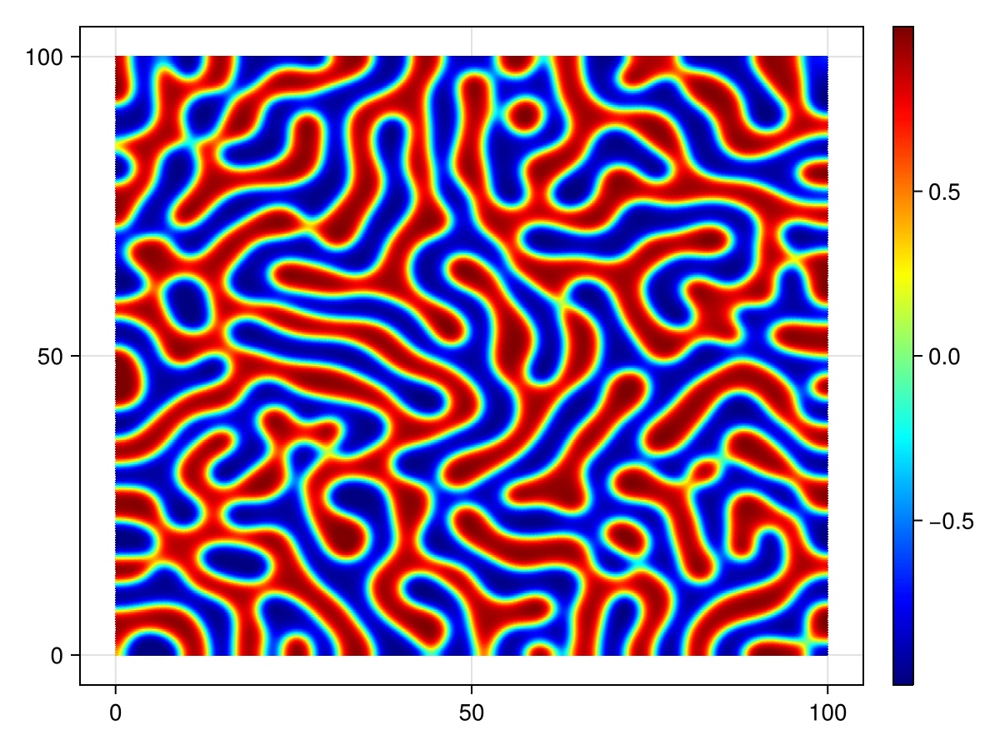
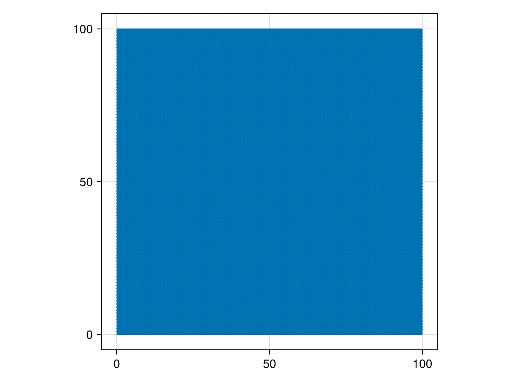
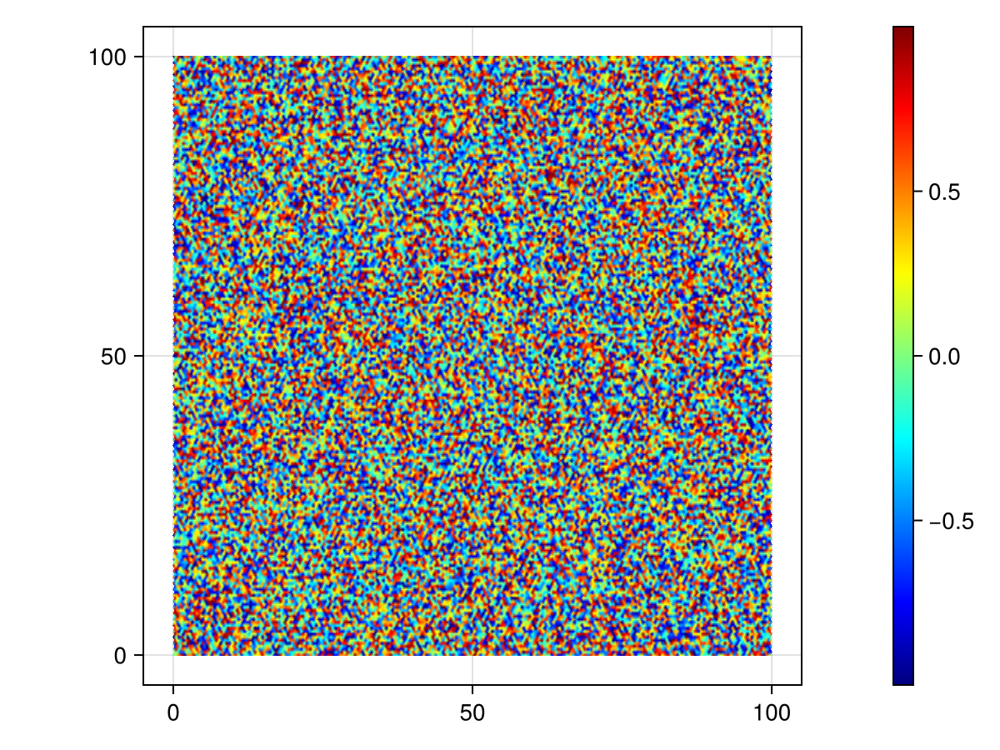

The Cahn-Hilliard Equation
For this example, Decapodes will model the Cahn-Hilliard equation. This equation describes the evolution of a binary fluid as its two phases separate out into distinct domains. Below is a high resolution preview of this model. Notice how the fluid has separated into distinct regions (blue and red) as well as the presence of a transition region.

Formulating the Equation
We first load in our dependencies
# AlgebraicJulia Dependencies
using Catlab
using CombinatorialSpaces
using Decapodes
using DiagrammaticEquations
# External Dependencies
using CairoMakie
using ComponentArrays
using GeometryBasics
using LinearAlgebra
using MLStyle
using OrdinaryDiffEq
using Random
Point3D = Point3{Float64};and then proceed to describe our physics using Decapodes.
CahnHilliard = @decapode begin
C::Form0
(D, γ)::Constant
∂ₜ(C) == D * Δ(C.^3 - C - γ * Δ(C))
end
to_graphviz(CahnHilliard)In this equation C will represent the concentration of the binary fluid, ranging from -1 to 1 to differentiate between different phases. We also have a diffusion constant D and a constant γ whose square root is the length of the transition regions. This formulation of the Cahn-Hilliard equation was drawn from the Wikipedia page on the topic found here.
Loading the Data
We now generate the mesh information. We'll run the equation on a triangulated grid.
s = triangulated_grid(100, 100, 0.5, 0.5, Point3D);
sd = EmbeddedDeltaDualComplex2D{Bool, Float64, Point3D}(s);
subdivide_duals!(sd, Circumcenter());
fig = Figure()
ax = CairoMakie.Axis(fig[1,1], aspect=1)
wf = wireframe!(ax, s; linewidth=1)
save("CahnHilliard_Rect.png", fig)
The Cahn-Hilliard equation starts with a random concentration holding values between -1 and 1. For both D and γ constants we choose 0.5.
Random.seed!(0)
C = rand(Float64, nv(sd)) * 2 .- 1
u₀ = ComponentArray(C=C)
constants = (D = 0.5, γ = 0.5);
fig = Figure()
ax = CairoMakie.Axis(fig[1,1], aspect=1)
msh = CairoMakie.mesh!(ax, s, color=C, colormap=:jet, colorrange=extrema(C))
Colorbar(fig[1,2], msh)
save("CahnHilliard_initial.png", fig)
We'll now create the simulation code representing the Cahn-Hilliard equation. We pass nothing in the second argument to sim since we have no custom functions to pass in.
sim = eval(gensim(CahnHilliard))
fₘ = sim(sd, nothing, DiagonalHodge());(::Main.var"#f#5"{PreallocationTools.FixedSizeDiffCache{Vector{Float64}, Vector{ForwardDiff.Dual{nothing, Float64, 12}}}, PreallocationTools.FixedSizeDiffCache{Vector{Float64}, Vector{ForwardDiff.Dual{nothing, Float64, 12}}}, PreallocationTools.FixedSizeDiffCache{Vector{Float64}, Vector{ForwardDiff.Dual{nothing, Float64, 12}}}, PreallocationTools.FixedSizeDiffCache{Vector{Float64}, Vector{ForwardDiff.Dual{nothing, Float64, 12}}}, PreallocationTools.FixedSizeDiffCache{Vector{Float64}, Vector{ForwardDiff.Dual{nothing, Float64, 12}}}, PreallocationTools.FixedSizeDiffCache{Vector{Float64}, Vector{ForwardDiff.Dual{nothing, Float64, 12}}}, SparseArrays.SparseMatrixCSC{Float64, Int32}}) (generic function with 1 method)Getting the Solution
Now that everything is set up and ready, we can solve the equation. We run the simulation for 200 time units to see the long-term evolution of the fluid. Note we only save the solution at intervals of 0.1 time units in order to reduce the memory-footprint of the solve.
tₑ = 200
prob = ODEProblem(fₘ, u₀, (0, tₑ), constants)
soln = solve(prob, Tsit5(), saveat=0.1);
soln.retcodeReturnCode.Success = 1And we can see the result as a gif.

[ Info: Page built in 180 seconds.
[ Info: This page was last built at 2025-03-14T09:28:26.763.